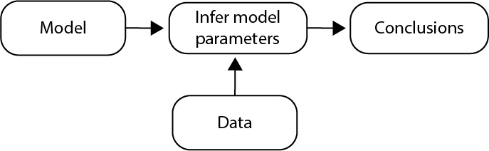
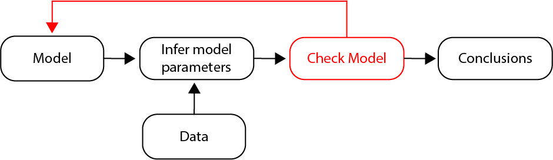

Evaluate your evaluation methods! A key to meaningful inference.
1. Introduction
What is Inference?
Inference is a fundamental concept in both everyday life and scientific investigation. It is the process of drawing conclusions based on evidence and reasoning. Inference allows us to make predictions, understand relationships, and gain insights from data and observations.
Why is Inference Important?
Decision-Making: Inference helps us make informed decisions. Whether you’re deciding what to wear based on the weather forecast or determining the best strategy for your experiment, inference plays a crucial role in evaluating options and outcomes.
Understanding Brain Function: Inference helps neuroscientists draw conclusions about brain activity from experimental data, bridging the gap between observed neural signals and underlying brain processes.
Clinical Applications: Inference is essential for diagnosing and treating neurological disorders. By analyzing patient data, clinicians can infer the underlying causes of symptoms and tailor treatments accordingly.
Everyday Examples of Inference
Weather Predictions: Meteorologists use data from satellites, weather stations, and historical patterns to infer future weather conditions. This helps us prepare for what’s coming, whether it’s bringing an umbrella or planning for a sunny day.
Medical Diagnoses: Doctors use symptoms, medical history, and test results to infer the most likely cause of a patient’s condition. This process is critical in providing accurate diagnoses and effective treatments.
Electrophysiology: Recording electrical activity from neurons allows researchers to infer the roles of specific neurons or networks in processing information.
Behavioral Studies: By observing behavior in response to stimuli, neuroscientists infer the neural mechanisms underlying perception, decision-making, and learning.
So, what is Inference?
- Here, we focus on statistical inference - using data from a sample to make inferences about a population. We will learn to apply statistical inference in this Unit.
Inference Skills To Develop
Ask Questions: Cultivate curiosity by asking questions about the world around you. Why did something happen? What might influence this happening? Asking questions leads to deeper understanding and better inference skills.
Gather Evidence: Collect relevant information and data. The more evidence you have, the stronger your inferences will be. Evaluate the quality and reliability of your sources. We can arrive at better conclusions through better data collection.
Think Critically: Analyze the evidence and consider multiple perspectives. Avoid jumping to conclusions without thorough examination. Critical thinking helps in making sound inferences.
What’s next?
In this Unit, we will practice making inferences from from noisy data.
To do so, we will use data from a specific example. We will build models from these data to make inferences about a population (i.e., statistical inference).
We will think critically about our inference results, ask questions about the interpretation (i.e., check our model), and update our model to improve the inferences we make from the data.
2. The data: swim lessons versus drownings.
You receive data from a community organization interested in understanding the impact of swimming lessons on swim safety. The data consist of the following information from in N = 299 communities:
swim_lessons- the number of swim lessons in a community,drownings- the number of drownings (per 100,000 individuals) in a community,x,y- the geographic location (latitude and longitude) of the community,
We’re interested in inferring the relationship (if any) between swim_lessons and drownings.
swim_lessons and drownings?
A very reasonable expectation is that:
- Expectation: Drownings decrease as the number of swim lessons increase.
That’s a fine statement.
However, we’d like to go beyond this qualitative expecation and put some numbers to it.
For example, does adding 1000 swim lessons to a community (e.g., by providing free programs, by promotion through advertising) reduce the number of drownings by 1, by 10, by 100?
In what follows, we’ll infer this expected relationship from the data.
But before we begin our inference procedure, let’s start by visualizing the data.
We’re provided one additional piece of information: the location (x,y) of each community with reported results.
Let’s also plot these geographic locations.
NOTE: Data visualization is often essential to statistical inference:
- We visualize the data to draw conclusions (inferences) about a larger population based on the sample of collected data.
Here we utilize data visulzation to gain some intuition for the data.
However, our focus is statisitcal inference, as we discuss next.
3. Make an inference: How do the number of swim lessons relate to drownings?
Now, let’s perform statistical inference.
To start, we’ll perform the following three steps:
- Choose a model for the data.
- Use the data to infer model parameters.
- Summarize conclusions.
Our initial statistical inference appraoch takes the form (McCullagh & Nelder, 1989; page 391):

We’ve already collected the data. Our next step is to choose a model for these data.
Step 1: Choose a model for the data.
Choosing a model requires we apply our prior knowledge as scientists.
In this case, let’s apply our intuition to express our model in words.
- Initial Model: I expect more swim lessons reduce the number of drownings.
That’s a fine model. To perform statistical inference, let’s express our model as an equation:
drownings= mswim_lessons+ b
| ( y ) → | |
| ( x ) → | |
| ( m ) → | |
| ( b ) → |
Here, our initial model is a line.
That’s a very simple model of the data.
We do not expect a line will capture all of the complexity in our data.
However, a line (or linear relationship) often provides a useful first step.
And, a line is relatively simple to compute and interpret.
Step 2. Use the data to infer model parameters.
Having chosen our model – a line – our next step is to infer the parameters in our model.
There are two parameters in the model:
m, the slope, andb, the intercept.
We’re primarily interested in the slope (m). This parameter indicates the relationship between swim_lessons and drownings.
m?
We expect \(m<0\).
We expect a negative relationship between
drowningsandswim_lessonsWe expect more swim lessons will reduce the number of drownings.
Let’s infer \(m\) from the data.
Meaning:
The slope estimate
mrepresents the estimated change in the number ofdrowningswhen the number ofswim_lessonsincreases by 1.The
standard_errorrepresents the variability of the slope estimate.
Interpretation:
If the number of
swim_lessonsincreases by 1, we estimate the number ofdrowningsto increase by 0.0014, on average.The standard error (0.0002) is small compared to the slope estimate, so the variability in the slope estimate is small; i.e., the estimate is precise.
Remember our model is a line.
A line is easy to visualize.
Since we’ve now inferrred the model parameters, let’s visualize the inferred line by plotting it with the data.
Step 3. Summarize conclusions.
We have chosen the model (Step 1) and inferred model parameters (Step 2).
Our last step is to summarize the conclusions of our statistical inference.
Let’s start by considering an explict numerical conclusion from our model:
- How does the number of drownings change if we increase the number of swim lessons by 1000?
drownings for a one-unit increase in the number of swim_lessons. How does the number of drownings change when the number of swim_lessons increases by 1000.
Answer:
Our model of the data is a line:
drownings = m swim_lessons + b
We inferred the model parameter m from the data and found:
drownings = 0.0014 swim_lessons + b
Consider what happens if the number of swim lessons increases by 1. According to our fit model, the number of drownings increases by:
\(0.0014 * 1\) swim lesson \(= 0.0014\)
That’s a small increase, in both the number of swim lessons and number of drownings.
Alternately, consider what happens if the number of swim lessons increases by 1000. Plugging into our model, we find the number of drownings increases by:
\(0.0014 * 1000\) swim lessons \(= 1.4\)
That’s perhaps a more interpertable result; a community making a policy decision to promote more swim lessons (e.g., through subsidies, though advertisements) might expect 1 more drowning.
In this way, we can always interpert the results of a model. It’s often useful to plug in values, and see what happens.
Summary
We’ve applied a statistical inference approach and found a compelling result:
- The number of drowings increases with more swim lessons.
The slope estimate m in our model looks convincing:
- The standard error is small (0.0002) compared to the slope (0.0014); i.e., the estimate is precise.
These results are certainly passable for peer-reviewed publication and perhaps enough to motivate a new public policy:
- To prevent drownings, discourage swim lessons.
4. Something’s not right … evaluate your evaluation method.
To look for a relationship between swim_lessons and drownings, our initial statistical inference appraoch required we chose a model of the data.
We chose a line to model the data.
This simple model resulted in a precise (i.e., low varaibility) estimate of the relationship between swim_lessons and drownings.
But, was this a good model choice?
An important step in any statistical inference is to check our model.
Let’s update our initial statistical inference appraoch to include this fundamental step (McCullagh & Nelder, 1989; page 391):

Our updated statistical inference appraoch becomes:
- Choose a model for the data.
- Use the data to infer model parameters.
- Check and refine the model.
- Summarize conclusions.
Notice that we’ve included a new step: Check and refine the model.
In checking the model, we look for discrepancies between the data and model.
These discrepancies help us determine whether the model is suitable or inadequate.
If we determine the model is inadequate, then we return to Step 1 (red arrow), consider an alternative model for the data, and repeat the inference and model checking steps.
If we determine the model is suitable, then we continue to Step 4 and summarize our conclusions.
This statistical inference loops profoundly changes the process of analysis (McCullagh & Nelder, 1989; page 392).
In what follows, we’ll illustrate this updated statistical inference loop by checking the model (Step 3) we developed for the swim_lessons and drownings.
Residual Analysis
Many appraoches exist to check a model (McCullagh & Nelder, 1989; Chapter 12).
Here, we implement a common and powerful appraoch: residual analysis.
Residuals are the differences between the observed data and model predicted values.
In our case, the residuals are the difference between the estimated drownings from our model (the line we fit to the data) and the actual values for drownings.
Remember our plot of the estimated model (solid red line) and the data (blue dots):
The residuals are the distance from each blue dot (the data) to the red line (the estimated model).
In the plot above, each orange line indicates a residual.
If the model is a good fit to the data, then we expect a patternless set of residuals (i.e., the residuals are randomly scattered around zero).
Alternatively, if we find patterns in the residuals, we might wonder about our model choice, and consider strategies to update and improve our model.
NOTE: Other approaches exist to check our model. These include goodness-of-fit metrics (like R-squared), comparison with alternative models (using techniques like AIC), and cross-validation to assess how well the model generalizes to new data. There’s unfortunately no one best strategy to check a model. Here we focus on residual analysis because the appraoch is intuitive and provides a good gauge of how our model is doing.
Let’s plot the residuals for our original model:
A: (Short answer)
- No. At first glance, these residuals look mostly patternless.
Our visualization of the residuals revelas no systematic patterns.
- Instead, the residuals appear to fluctuate around 0.
That means our model is ok, right?
NO!
This visualization of the residuals is not very informative.
The horizontal axis (the variable index) is arbitrary.
To observe systematic patterns in the residuals, let’s plot the residuals versus the predictor in our model: the number of swim_lessons.
swim_lessons?
A: (Short Answer)
Inspection of residuals versus swim_lessons reveals two clear patterns:
As
swim_lessonsincreases, a systematic decrease in theresiduals.As
swim_lessonsincreases, the variability of theresidualstends to increase.
We conclude from this model check that something isn’t right.
- Our model doesn’t adequately describe features in the data.
residuals versus the predictor swim_lessons. We could also plot residuals versus the outcome variable drownings. Doing so, what do you see?
A: (Extension / Challenge Question)
Model Refinement: infinite choice
Our initial approached modeled swim_lessons versus drownings.
To do so, we chose a line as our model (Step 1).
We then inferred model parameters from the data (Step 2) and checked the model (Step 3) by visualizing the residuals.
Our model check suggests the model is inadequate.
- We find systematic discrepancies between the model estimates and data.
Therefore, it’s time to refine our model.
We can refine the model in infinite ways.
For example, we could consider this model:
drownings= mswim_lessons+ b + aswim_lessons\(^2\)
where we propose that the number of drownings depends on the number of swim lessons and the number of swim lessons squared.
Or we might consider:
drownings= mswim_lessons+ b + aswim_lessons\(^2\) + cswim_lessons\(^3\) + \(\log10\)(swim_lessons)
where we propose that the number of drownings depends on the number of swim lessons, the number of swim lessons squared, the number of swim lessons cubed, and log10 of the number of swim lessons.
A: (Short Answer)
swim_lessons\(^4\)swim_lessons\(^{10}\)
Your challenge, as a scientist, is to select a meaningful next model from these infinite model choices.
For each choice, we can iterate our statistical inference loop (infer the model parameters from data, then check the model).
Selecting a model is an art. You must use your knowledge and intution as a scientist to select model terms.
As scientists, we use our intuition to rule out ridiculous models.
For example, you probably would not consider this model:
drownings= mswim_lessons+ b + a \(\sin(\exp(\)swim_lessons\(^{1/3}\) ))
Why not consider this model?
Because the term \(\sin(\exp(\)
swim_lessons\(^{1/3}\) )) looks like overly-complicated nonsense.We have intuition that
drowningsdoes not depend onswim_lessonsin this complicated way.
When we observe additional data, we can decide to include that additional information in the model.
In this case, we also observe the geographic location (latitude and longitude) of each community in the study.
Let’s investigate how the residuals relate to the geographic location of the community.
A: (Multiple Choice)
- (Correct) Yes, the residuals appear to vary with geographic location. Nearer to the ocean, the residuals tend to be more positive (darker blue colors).
- (Incorrect) No, the residuals do not appear to vary with geographic location.
Conclusions
Our analysis of the residuals suggests an important result
- Our inital model fit (a line) is no good.
This is a very useful result.
Our initial statistical inference produced a counter-intuitive result:
- As swim lessons increase, so do drownings.
But this initial inference is based on a model - the line - that’s not a good representation of the data.
- Clear trends exist in the residuals.
Checking the model is our first step to improving the model, and thereby improving the statistical inferences we make from the data.
NOTE: In this case, our model check (Residual Analysis) failed; the resiudals were not randomly scattered around 0.
Because the model check failed, we can dismiss the counter-intuitve relationship identified in our initial model (i.e., that more swim_lessons increase the number of drownings) and continue model development.
However, we emphasize that further model development should be pursued regardless of the relationship our initial model identified. Even if the initial statistcal inference proposed an intuitive result (i.e., that more swim_lessons decrease the number of drownings), we would still continue model development; when the model check fails, we’re not satisified with the initial model, no matter the intuitive appeal of the result.
5. Iterate the statistical inference loop: improve your scientific conclusions by improving your inference model.
Remember our statistical inference loop:
In Mini 3, we proposed our initial model
- Initial model:
drownings= mswim_lessons+ b
In Mini 4, we checked our model by visualing the residuals (i.e., the difference between our initial model predictions and the data).
We found systematic discrepancies (i.e., patterns) in the residuals and concluded:
- Our inital model fit (a line) is no good.
With this knowledge, our task now is to refine the model.
A: (Short Answer)
- Many things could be missing, including the age of individuals in the community, or the time of year in which the data were collected, or the socioeconomic status of each community. The goal of a model is not to capture every possible cause of
drownings. Instead, the goal of the model is to develop a simple, but useful, description of the population, given the small sample of data we get to observe. In the words of George Box: “All models are wrong, but some are useful.” - There could be issues with the sampling of data. Maybe the data were collected incorrectly. That’s possible, but not the issue here.
To update our model, consider these data we examined in previous Minis:
- The geographic location of each community.
Let’s again consider the initial model residuals versus the geographic location of each communitiy:
We observe that these residuals vary with geographic location.
More specficily, we notice spatial patterns in the residuals:
positive residuals near the coast,
negative resiudals away from the coast.
These observations suggest an important model refinement:
- Update the model to include distance to the ocean as another predictor.
A: (Multiple Choice)
- (Correct) The feature makes intuitive sense: we might expect more
drowningsat locations near to the ocean, and fewer drownings at locations far from the ocean. - (Correct) We have data for this predictor (i.e., we can determine the distance from each community to the ocean).
With this idea for our new model, let’s implement each step of our statistical inference loop:
- Choose a model for the data.
- Use the data to infer model parameters.
- Check and refine the model.
- Summarize conclusions.
Step 1: Choose a model for the data.
Our refined model of drownings includes two predictors:
- The number of swim lessons (
swim_lessons). - The distance from the ocean (
distance_from_ocean)- measured as the geodesic distance in kilometers as the crow flies from Myrtle Beach).
Our refined model becomes:
- Refined model:
drownings= \(m_1\)swim_lessons+ \(m_2\)distance_from_ocean+ b
Remember that our initial model - a line in Mini 3 - contained one outcome (drownings) and one predictor (swim_lessons).
Our refined model contains one outcome (drownings) and two predictors (swim_lessons and distance_from_ocean).
Therefore, our refined model is a 2-dimensional plane in the 3-dimensional space of the data.
To visualize our 3-dimensional data, let’s load these new data and plot it.
A: It’s difficult to see, but maybe.
Step 2. Use the data to infer model parameters.
With these data and our refined model, let’s continue our statistical inference loop and infer model parameters.
To do so, we’ll fit a plane to the data.
The idea is exactly the same as fitting a line to the data in our original model.
By fitting a plane to the data, we’ll infer three model parameters:
- \(m_1\), the slope corresponding to the predictor
swim_lessons. - \(m_2\), the slope corresponding to the predictor
distance_from_ocean. - \(b\), the intercept.
We’re primarily interested in \(m_1\), the slope corresponding to the predictor swim_lessons.
- This parameter indicates the relationship between
swim_lessonsanddrownings.
However, we now include the additional predictor distance_to_ocean and also infer its slope (\(m_2\)) from the data.
We’re not necessarily interested in the relationship between drowings and distance_to_ocean. Motivated by our scientific knowledge (e.g., that drownings may depend on a community’s distance to the ocean) and our residual analysis in the initial model, we include this new predictor.
A: (Multiple Choice)
(Incorrect) I expect the slope is positive because I expect
drowningswill increases withswim_lessions.(Correct) I expect the slope is negative because I expect
drowningswill decrease withswim_lessions.
A: (Multiple Choice)
(Incorrect) I expect the slope is positive because I expect
drowningswill increases withdistance_from_ocean.(Correct) I expect the slope is negative because I expect
drowningswill decrease withdistance_from_ocean.
We expect \(m_1<0\) and \(m_2<0\).
We expect a negative relationship between
drowningsandswim_lessons, i.e., we expect increased swim lessons will decrease the number of drownings.We expect a negative relationship between
drowningsanddistance_from_ocean, i.e., we expect increased distance from the ocean will decrease the number of drownings.
Let’s infer \(m_1\) and \(m_2\) from the data.
Meaning:
- The slope estimate
m_1represents the change in the number ofdrowningsfor a one-unit change in the number ofswim_lessons. - The slope estimate
m_2represents the change in the number ofdrowningsfor a one-unit change in thedistance_from_ocean. - For each parameter, the
standard_errorrepresents the variability of the slope estimate.
Interpretation of inferred value for m_1:
- The sign of
m_1is negative. - If the number of
swim_lessonsincreases by 1, we estimate the number ofdrowningsdecreases by 0.0003, on average. - The standard error (0.0003) is big compared to the slope estimate, so the variability in the slope estimate is large; i.e., the estimate is unreliable.
Interpretation of inferred value for m_2:
- The sign of
m_2is negative. - If the
distance_from_oceanincreases by 1 kilometer, we estimate the number ofdrowningsdecreases by 0.06, on average. - The standard error (0.0087) is small compared to the slope estimate, so the variability in the slope estimate is small; i.e., the estimate is precise.
Our refined model is a 2-dimenisonal plane in the 3-dimensional space of variables (swim_lessons, distance_from_ocean, and drownings).
Since we’ve now inferrred the model parameters from the data, we can visualize the inferred plane.
In other words, let’s plot the model with the data.
Step 3. Check and refine the model.
Let’s now check the refined model.
To do so, let’s plot the new model errors (i.e., the residuals) versus a predictor in our model (here, the number of swim_lessons).
A: (Multiple Choice)
- (Correct) The residuals are the difference between the observed number of drownings (
drowning) and the predicted number of drowning by the model. Both of these quantities are 1-dimensional. - (Incorrect) The data are 3-dimensional and the model is 2-dimensional so 3-2 = 1.
swim_lessons?
A: (Short Answer)
Inspection of residuals versus swim_lessons reveals one pattern:
- As
swim_lessonsincreases, the variability of theresidualstends to increase.
Remember that, in our initial model, we observed a systematic trend in the residuals.
- Original Model: As
swim_lessonsincrease, the averageresidualsvalue decreases.
In our reifned model, visual inspection reveals no systematic trend in the residuals
- Refined Model: As
swim_lessonsincrease, the averageresidualsvalue remains approximately constant.
This is a nice improvement compared to our original model.
Including the additional variable distance_to_ocean has reduced a systematic trend in the residuals.
Let’s also plot the residuals of the new model versus the geographic location.
A: (Multiple Choice)
- (Incorrect) Yes, the residuals appear to vary with geographic location. Nearer to the ocean, the residuals tend to be more positive (darker blue colors).
- (Correct) No, the residuals do not appear to vary with geographic location.
Step 4. Summarize conclusions.
Having chosen the model (Step 1), inferred model parameters (Step 2), and checked our model (Step 3), our last step is to summarize the conclusions of our statistical inference.
To do so, let’s consider explict numerical conclusions from our model:
- How does the number of drownings change if we increase the number of swim lessons by 1000 or distance from the ocean by 100 kilometers?
drownings change when the number of swim_lessons increases by 1000.
A:
Our model of the data is a plane:
drownings = \(m_1\) swim_lessons + \(m_2\) distance_from_ocean + b
We inferred the model parameter m_1 from the data and found:
drownings = -0.0003 swim_lessons + …
If the number of swim lessons increases by 1000, then the number of drownings changes by:
drownings = -0.0003 * 1000 = -0.3
So, by this calculation, increasing the number of swim lessons by 1000 reduces the number of drownings by -0.3.
However, we have no confidence in this result!
We found a standard error of 0.0003 for the estimate of \(m_1\). This standard error is as large as the estimate \(m_1\) itself.
We therefore would not be surprised if repeated experiments found \(m_1\) values between approximatley:
\(m_1 \pm 2 * \mathrm{standard \, error} = -0.0003 \pm 2*0.0003 = [-0.0009, 0.0003]\)
So, due to the large standard error, we cannot confidently conclude whether \(m_1\) is positive or negative.
In other words, we cannot conclude whether increasing swim lessons increases or decreases the number of drownings.
drownings change when the distance_to_ocean increases by 100 kilometers.
A:
Our model of the data is a plane:
drownings = \(m_1\) swim_lessons + \(m_2\) distance_from_ocean + b
We inferred the model parameter m_2 from the data and found:
drownings = … -0.06 distance_from_ocean + …
If the distance from the ocean increases by 100 kilometers, then the number of drownings changes by:
drownings = -0.06 * 100 = -6
So, by this calculation, increasing the distance to the ocean by 100 kilometers reduces the number of drownings by -7.
In this case, we are confident in this result!
We found a standard error of 0.0087 for the estimate of \(m_2\). This standard error is much smaller than the estimate of \(m_2\) itself.
We therefore would not be surprised if repeated experiments found \(m_2\) values between approximatley:
\(m_2 \pm 2 * \mathrm{standard \, error} = -0.06 \pm 2*0.0087 = [-0.077, -0.043]\)
So, due to the small standard error, we can confidently conclude that \(m_2\) is negative.
In other words, we conclude that increasing distance from the ocean decreases the number of drownings.
Summary
Our residual analysis suggests an important result: Our refined model (a plane) improves the model fit.
We’ve made progress improving our model!
Our initial model produced a significant - but nonsensical - result:
- Initial model conclusion: As swim lessons increase, so do the number of drownings.
However, performing our model checks, residual analysis revealed a poor model fit.
The poor model fit motivated a cycle through our statistical inference loop.
We refined the model by adding another predictor - the distance to the ocean.
The refined model changed our results dramatically:
- We improved our model fit (by reducing a systematic trend in the residuals).
- However, we still observe that the variability of the residuals tends to increase with the number of swim lessons.
- We found a (weak) relationship between increasing swim lessons and decreasing drownings.
- While this result makes intuitive sense, our evidence for this relationship is not convincing (the variability in the estimate is large).
- We found a (strong) relationship between increasing distance from the ocean and decreasing drownings.
- This result also makes intuitive sense and our evidence for this relationship is strong (the variability in the estimate is small).
We show in the next Minis that continued model refinement in our statistical inference loop can further strengthen our results. - If you’re interested, check out the other Minis associated with this Unit.
To conclude, we applied our statistical inference loop to make inferences from noisy data.
We started by choosing a model and inferring the model parameters (i.e., the slopes).
But that is not enough!
We must also check our model, in our case by plotting the residuals.